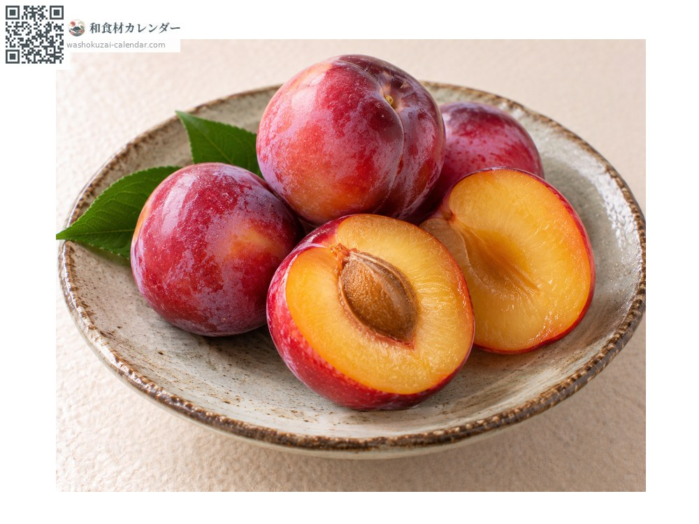
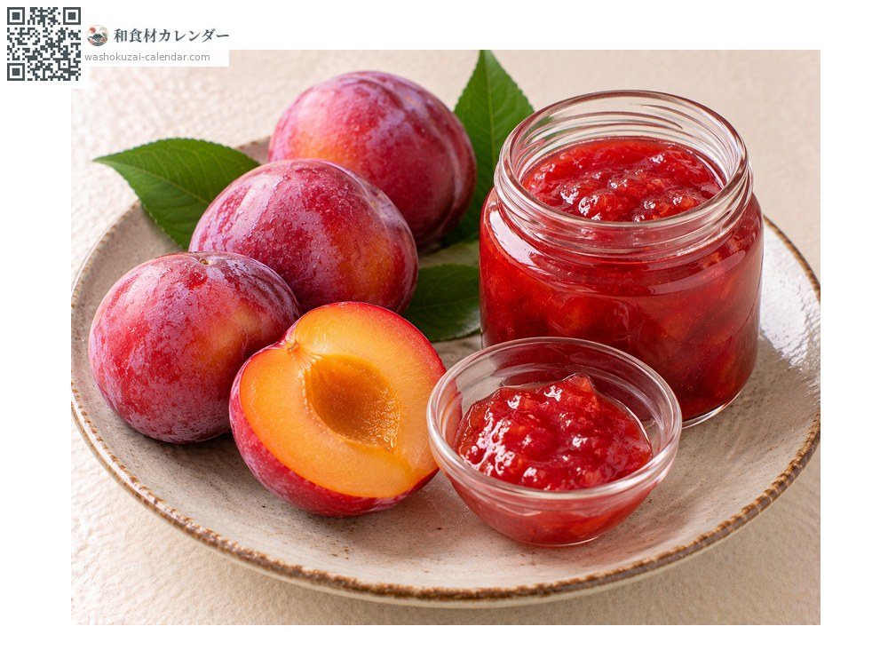
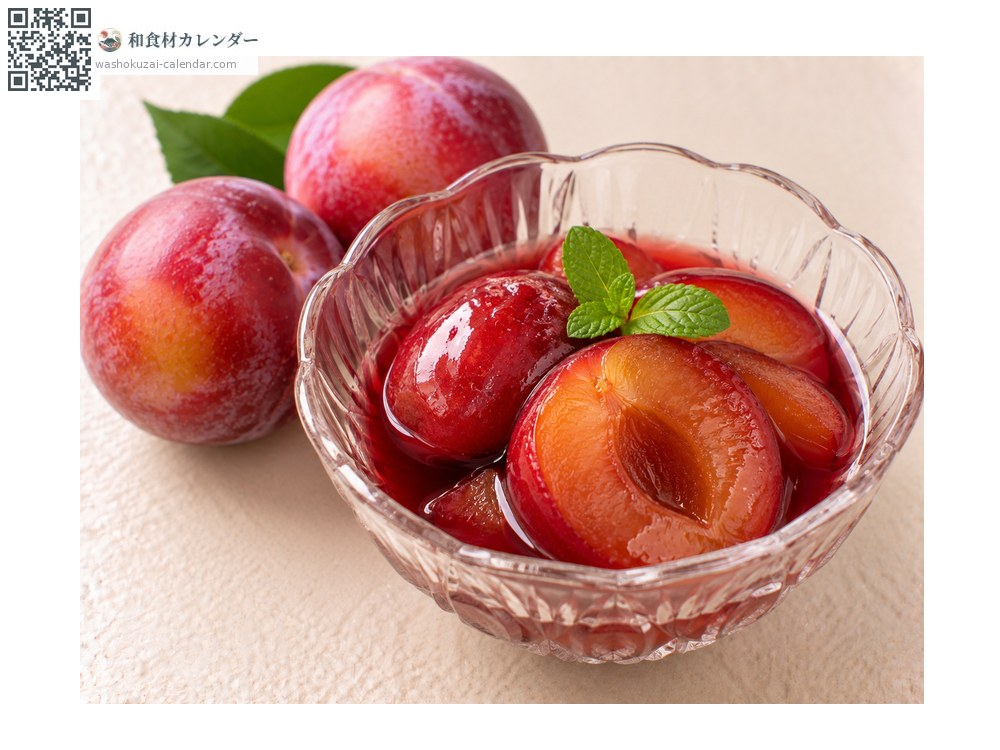
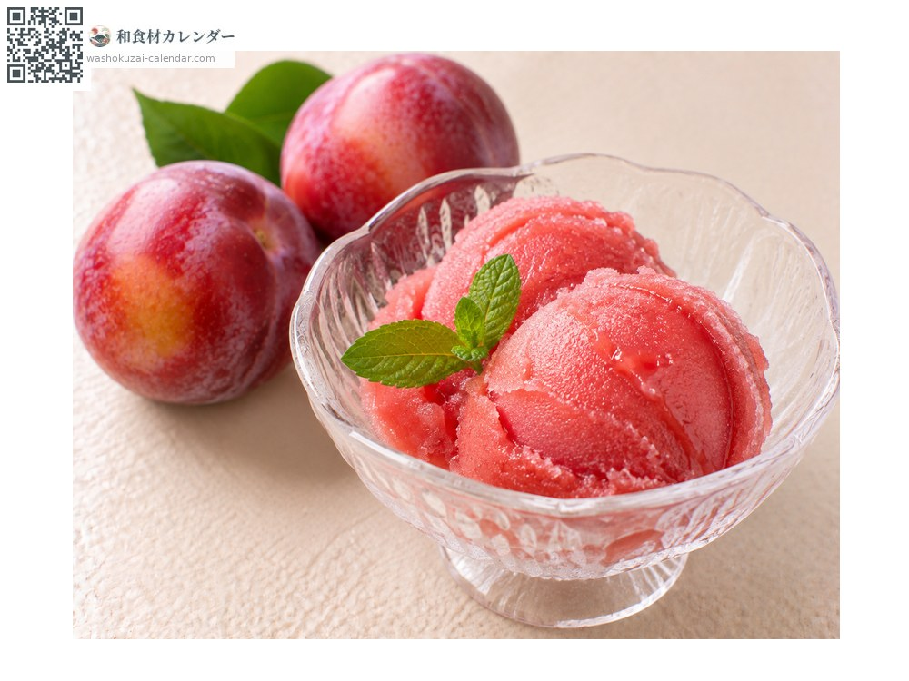

果物
すもも
すもも
別名・別表記李、スモモ、プラム、sumomo
旬は7月・8月・9月

旬の時期
1月
2月
3月
4月
5月
6月
7月
8月
9月
10月
11月
12月
旬出回り
調理法

そのまま
皮ごと食べる。皮の酸味と果肉の甘みが調和する。

ジャム
煮詰めると鮮やかな赤色になる。

コンポート
赤ワインで煮る。香りが引き立つ。

シャーベット
果肉を凍らせる。酸味が爽やかになる。
選び方
果皮に白い粉がふき、持って弾力があるもの。香りが立つもの。
保存方法
硬いものは常温で追熟させ、柔らかくなったら冷蔵する。
主な産地
豆知識
「李」とも書き、英語ではプラムと呼ばれる。大石早生、ソルダム、太陽などの品種がある。梅より酸味が穏やかで生食できることが名の由来とされる。皮の近くに酸味が多く、皮ごと食べると味の輪郭がはっきりする。